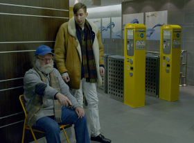

Man mÜsste RÄuber sein, oder zumindest Sprengmeister
You Would Have to Be a Robber or at Least a Demolitions Expert
Jan Bachmann
Deutschland / Schweiz 2014
25 min – HD – deutsch. OmeU
Konzept: Jan Bachmann – K: Matilda Mester, Anges Pakozdi, Jan Bachmann – SD: Jan Bachmann, Carl Schilde – S: Jan Bachmann
P: dffb – Mit Aleksandre Kaberidze, Beniamin Forti, Julian Radlmaier, Tatjana Kononenko, Jan Bachmann
"In a fully capitalized urban and rural space, creativity for someone with no capital is limited to their Vimeo account. At least as long as they stick to the laws. However, a group of robbers want to break the lethargy and rob a bank. Time passes by and nothing really seems to work. One moves purposelessly through spaces, sells electronic goods or tries to develop iPhone apps to get by. The breakthrough seems already impossible - as the cinematic space begins to dissolve." – Jan Bachmann
saturday 10 oct 8.30 pm werkstattkino
Jan Bachmann born in 1986 in Basel, Switzerland. Currently film studies at the dffb – Deutschen Film- und Fernsehakademie Berlin. He is director of several short films. YOU WOULD HAVE TO BE A ROBBER… premiered at the Critic’s Week.